Artificial Intelligenece Club 人工智能俱乐部 (Genesis) NFT 在过去 7 天内售出 4 次。人工智能俱乐部 (Genesis) 的总销售额为 4.19 万美元。一个人工智能俱乐部（Genesis）NFT 的平均价格为 1000 美元。
Artificial Mythology Artificial Mythology 在过去 7 天内售出 3 次。Artificial Mythology的总销售额为 63.31 美元。一个 Mythologicals NFT 的平均价格为 21.1 美元。有 402 名 Mythologicals 所有者，拥有 1,000 个代币
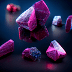 Artificially Intelligent Artworks 我喜欢用人工智能引擎创作的艺术作品集。反映我自己最喜欢的作品。 希望你和我一样喜欢它们。 人工智能艺术品 NFT 在过去 7 天内售出 1 次。人工智能艺术品的
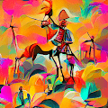 ArtificialPerception 来自机器意识的 aSynthesis AI 500 1/1 的人工感知 人工感知 NFT - 常见问题 (FAQ) ▶ 什么是人工感知？ 人工感知是一个 NFT（不可替代令牌）集合。存储在区块链上的数字艺术品
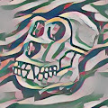 Artistic Ape Club Official 8,888 只艺术猿诞生在以太坊区块链上。 独特而新鲜的 NFT 生成，适合所有艺术和猿爱好者！ 不隶属于任何项目。 Artistic Ape Club 官方 NFT - 常见问题（FAQ） ▶ 什么是艺猿社
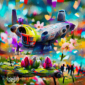 Artistic Spaceships 艺术宇宙飞船是以太坊区块链上的宇宙飞船集合。 Artistic Spaceships 的艺术之爱是独特的 NFT 艺术的集合，所有这些都是通过使用数字画笔进行的数字绘画完成的，并且无法重
ARTJEDI Community 1 欢迎来到 OpenSea 上的 ARTJEDI Community 1 主页。 发现这个系列中最好的项目。 “ARTJEDI Community 1”是世界上第一个结合视频和音乐的实用程序 Classic NFT。NFT 不断发行给表
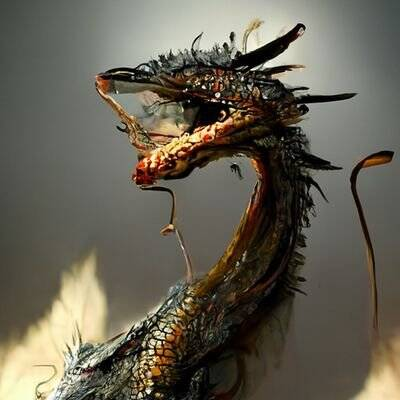 ARUKAMI DRAGONZ AI 铸币厂结束时将在我们的网站上进行质押质押您的 NFT 并获得 150 美元 UD 代币 网站 https://arukamidragonz.com 鹰“鸣神”是疾风在 CryptoNinja 中的搭档。他们似乎变身为各种形式来执行他们的任务&
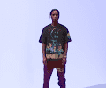 ASAP Rocky 作为嘻哈真正的特立独行者之一，出生于哈林区的 MC A$AP Rocky，出生于 Rakim Mayers，已经席卷了音乐、艺术和时尚界。 自 2011 年出道以来，洛奇已成为流
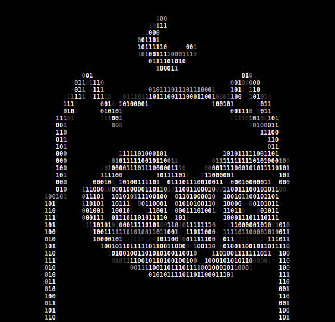 ASCBirds 像素鸟？ 地毯鸟？ 艾鸟？ 不！新的元数据是 ASC BirdA 10000 只鸟类集合，只有二进制和 ASC 字符艺术由任何人（和所有人）拥有 像素 ASCBirds' NFT - 常见问题（FAQ） ▶ 什么是 A
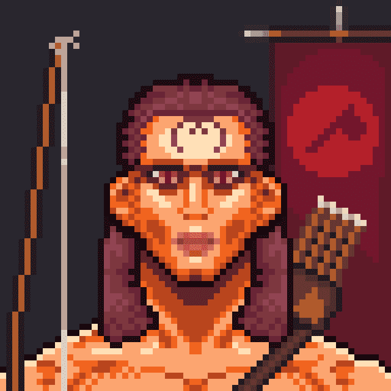 Ascend to Resurrection Ascend to Resurrection NFT 在过去 7 天内售出 1 次。Ascend to Resurrection 的总销售额为 0.22 美元。一个 Ascend to Resurrection NFT 的平均价格为 0.2 美元。有 3,473 名 Ascend to Resurrection 所有者，总共拥有 6,000 个代币。 上升
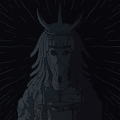 Ascended NFT Official 8888 Collection Adventure 2 赢得超自然世界的探险家，寻找神秘的强大面具。 使用 Entity Builds on NFT WORLDS 开发的游戏 - 今年夏天推出。 Ascended NFT 官方 NFT - 常见问题（FAQ） ▶ 什么是 Ascended NFT 官方？
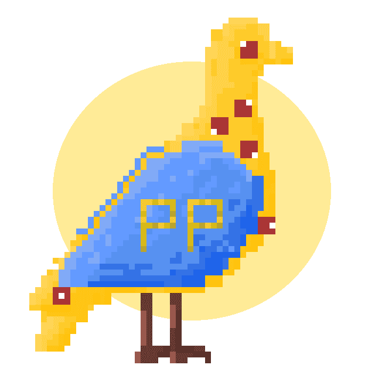 Ascended Pigeons 我们第一个系列的衍生产品 - Project Pigeon。为我们在 Discord 中的支持者创建。 Ascended Pigeons NFT 在过去 7 天内售出 1 次。Ascended Pigeons 的总销售额为 5.13 美元。一只 Ascended
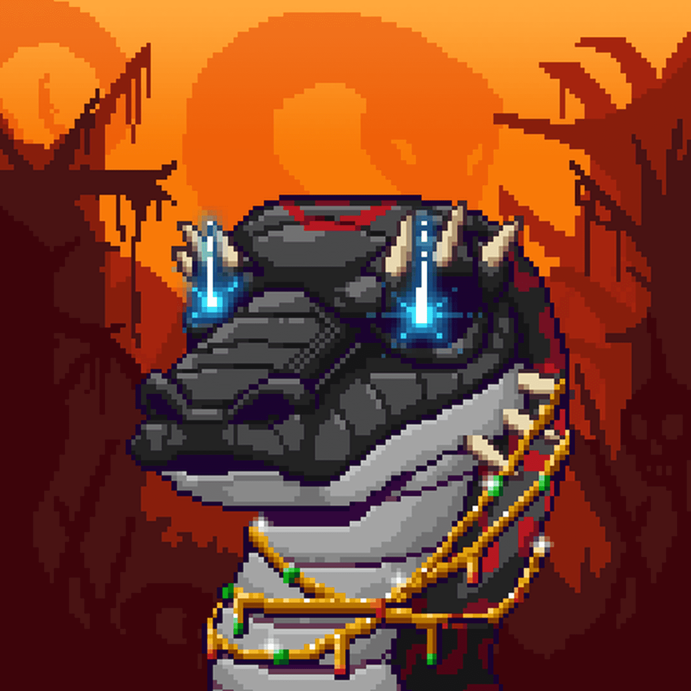 Ascended Snakes 以太坊丛林中的 222 条转基因蛇CC0 // 0% ROYALTIES Ascended Snakes NFT - 常见问题（FAQ） ▶ 什么是升蛇？ Ascended Snakes 是一个 NFT（不可替代代币）集合。存储在区块链上的数字艺术
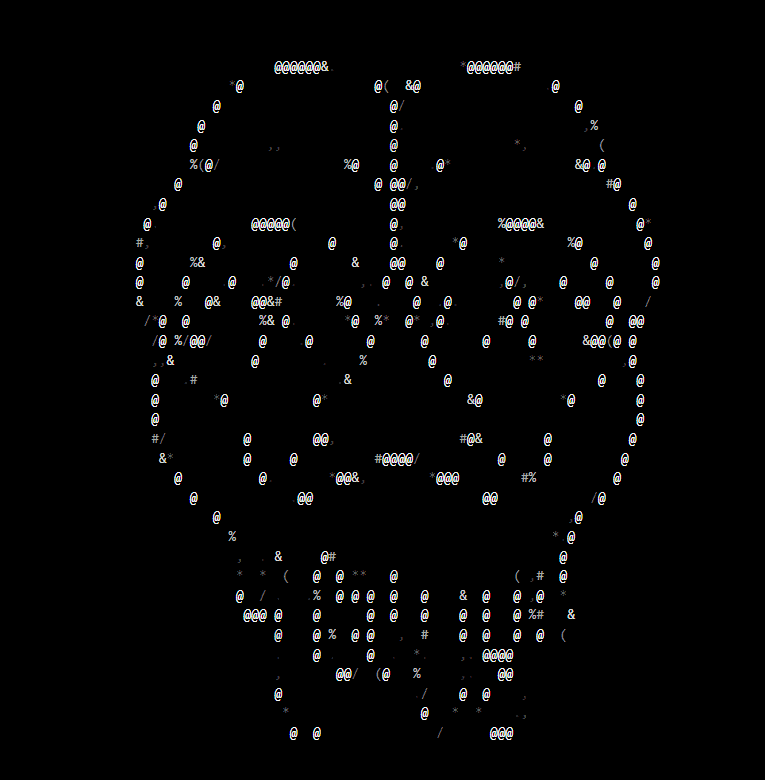 ASCII Apepe 免费薄荷系列。 由@rareapepeyc 的退化收集者创建。 与原项目无关。 ASCII Apepe名称标签 NFT - 常见问题 (FAQ) ▶ 什么是 ASCII ApepeI 名牌？ ASCII Nametag 是一个 NFT
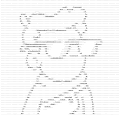 Ascii Doodles Ascii Doodles 是对所有 10,000 个 Ascii 形式的原始 Doodles 的 1:1 再现，包括元数据属性！ Ascii Doodles NFT - 常见问题（FAQ） ▶ 什么是 Ascii 涂鸦？ Ascii Doodles 是一个 NFT（不可替代令牌）集合。存储
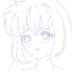 Ascii Hentai Onchain ASCII 裸体 Ascii Hentai NFT - 常见问题（FAQ） ▶ 什么是 Ascii Hentai？ Ascii Hentai 是一个 NFT（不可替代令牌）集合。存储在区块链上的数字艺术品集合。 ▶ 存在多少 Ascii
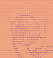 ASCII MFERs 420 个链上 ASCII mfer 的集合。 没有开发人员，没有路线图，只有艺术。 ASCII MFERs NFT - 常见问题（FAQ） ▶ 什么是 ASCII MFER？ ASCII MFER 是一个 NFT（不可替代令牌）集合。
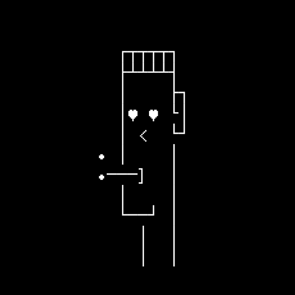 ASCll Punks ASCllPunks 收集了 1000 个 NFT，他们意识到我们今天交易和收集的许多 NFT 只不过是带有硬编码链接到包含元数据的集中式服务器的代币。 由于市场上有许多 NFT，您必
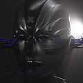 ASH MUTANTS 突变体是那些已经转变的人。 ASH MUANTS NFT - 常见问题（FAQ） ▶ 什么是灰烬突变体？ ASH MUTATS 是一个 NFT（不可替代代币）集合。存储在区块链上的数字艺术品集合
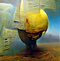 Ash Realm ..从灰烬中，一个新的境界诞生了。 Ash Realm NFT - 常见问题（FAQ） ▶ 什么是灰域？ Ash Realm 是一个 NFT（不可替代代币）集合。存储在区块链上的数字艺术品集
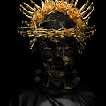 Ash Walkers by Mwan Welcome the Ash Walkers 是一系列步行角色，灵感来自 Murat Pak 的作品。 可在 ASH 代币中购买。 我们接受 ASH ！ Mwan NFT 的 Ash Walkers - 常见问题（FAQ） ▶ Mwan 的 Ash Walkers 是什么？ Mwan 的 Ash Walkers 是一个 N
Asian Identity Asian Identity Collection 是以太坊上的 8K 亚洲主题 NFT，庆祝文化多样性，同时帮助人们在当地和国际社区中相互联系。 亚洲身份 NFT - 常见问题 (FAQ) ▶ 什么是亚洲身份？ 亚洲身份
AsianApes 2500 只亚洲猿类的集合。 拥有一只亚洲猿，您不仅是历史的骄傲拥有者，而且您还可以访问我们的独家艺术收藏品。前 750 只亚洲猿将免费分发。 AsianApes NFT - 常见问题(
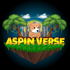 Aspinverse Aspinverse 是一个细分的 NFTWorld 元宇宙，Kool Aspins 和其他 NFT 一起生活在其中。 土地所有者可以在 128x128 平方块的土地上开发和建造任何他们能想到的东西。注意：共享边界块包
Assassin Bear Squad - Official 刺客熊队。 一家国际性的杀手熊公司，具有保护世界安全的特殊能力。 是时候扭转人类猎人的局面了。查看官方收藏访问网站：WWW.ASSASSINBE
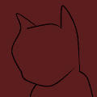 Assassin Cats Agency Assassin Cats Agency 是 7777 名猫特工 + 15 名特工和促销 NFT 的集合，生活在以太坊区块链上。 将它们用作在我们的 Base Alpha 内进行的间谍风格 RPG 中的角色（不和谐） 刺客猫代理 NFT - 常
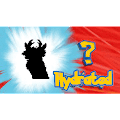 AssPass 这组 555 名不幸的德根人在 OpenSea 入侵后失去了通行证，需要找到避难所 AssPass NFT - 常见问题（FAQ） ▶ 什么是 AssPass？ AssPass 是一个 NFT（不可替代令牌）集合
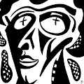 ASTARISK 大卫·洛佩兹·庞塞 (David Lopez Ponce) 的 50 1/1 原创作品合集，旨在重温过去，摆脱压抑的情感创伤。 ASTARiSK NFT - 常见问题（FAQ） ▶ 什么是 ASTARiSK？ ASTARiSK 是一个 NF
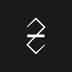 Astraglade Astraglade 是一个交互式的、生成的、3D 收藏实验。 Astraglades 通过独特的社会收集机制收集。 Astraglade 的每个版本都可以签名，该签名将永远保留在艺术品中。星宿特质 Astraglade NFT - 常见
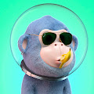 Astral Baby Ape Club 谁能给无聊猿游艇俱乐部（BAYC）沉闷的生活带来滋味？ 认识来自 Lady Ape 俱乐部 (LAC) 的华丽女士们！发现我们神话般的 Lady Apes 并抓住让您的心跳比其他人先跳动的
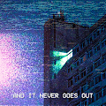 Astral Reflections 来自另一个时间和地点的快照，实时捕获，它们的深度稍后会显示出来。 Astral Reflections NFT - 常见问题（FAQ） ▶ 什么是星体反射？ Astral Reflections 是一个 NFT（不可替代代币）
Astral Souls Astral Souls NFT 在过去 7 天内售出 10 次。Astral Souls 的总销售额为 1900 美元。Astral Souls NFT 的平均价格为 189.7 美元。共有 0 个星魂拥有者，拥有总供应量的代币。 Astral
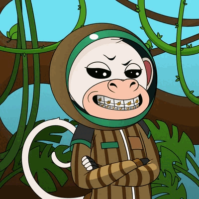 Astro Apes Bbaby | FREE MINT Astro Babies 一直在进行星际冒险，他们最喜欢的消磨时间是赌博。 Astro Casino 是他们在元宇宙中闲逛的地方。 在地球上，唯一能找到它们的地方是萨尔瓦多的 Worlds First Land Crypto 赌场。
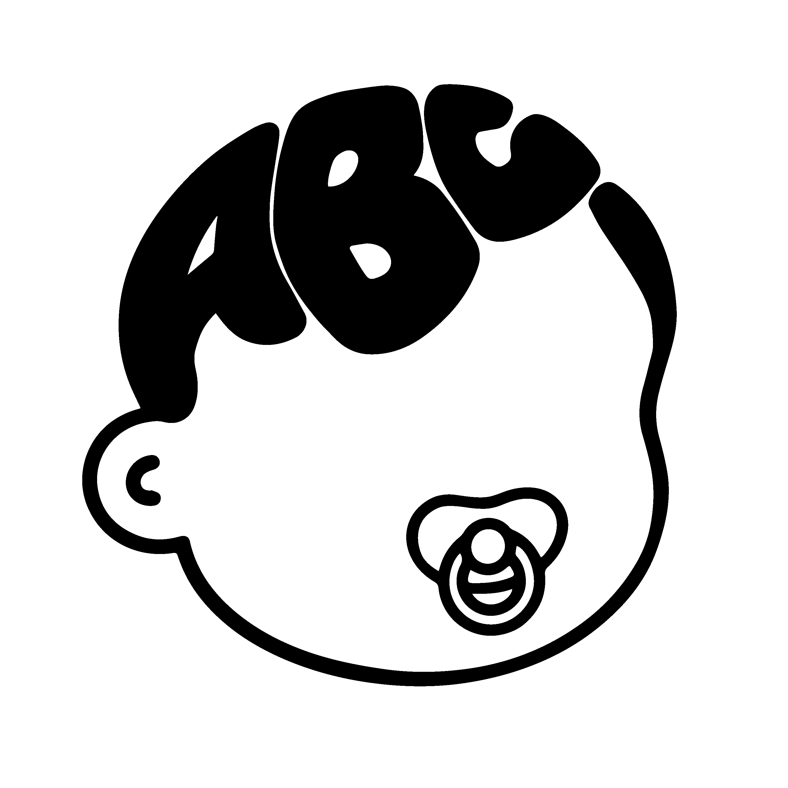 Astro Baby Club NFT Astro Baby Club 是在以太坊星系上生成的独特手绘 NFT 集合。 ABC 成立的核心使命是做好事，享受乐趣，突破 web3 的极限。 每个 NFT 都是 Astro Baby Club 的永久会员，从面对面和在线活动
Astro Friends Collection 薄荷现已开放：https://astrofriends-mint.com/ Astro Friends Collection 是一个由 4999 个 NFT 组成的项目，由才华横溢的专家设计师和开发人员精
Astro Girls Society Official Astro Girls Society 是一项由女性主导的加密 NFT 计划，旨在让女性加入 Web3。 该系列以中国上海著名女艺术家张十一的作品为特色。 十一为她的手绘绘画带来了无与伦比
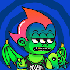 Astro Kid Matic 3333 名 Astrokids 在 Fantom、Avalanche 和 Matic 中航行。 受到 80 年代和 90 年代卡通和漫画的怀旧之情的启发，以及 Teens On Acid 的创始人、澳大利亚新流行艺术家 Josh
Astrobaby NFT Official ☾ ﾟ｡⋆8,880 像素神奇生物将占星术与健康与 web3 技术联系起来⋆ﾟ｡☽ Astrobaby NFT Official NFT - 常见问题（FAQ） ▶ 什么是Astrobaby NFT Officia
Astrohedz Astrohedz 是源自 Enefty Galaxy（在以太坊区块链上）的 10,000 个独特的 Astrohedz NFT（包含来自不同行星的四个子集合）的集合。 使用标准 ERC-721 智能合约并由 IPFS 支持，每个 Astrohedz NFT
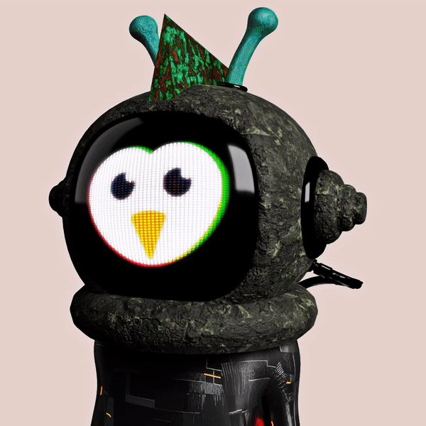 Astroland 3D 500 个 Astrolands 的 3D 集合。 2 个月的工作。300 免费 MINT，剩余 0,001，售后最多 10Revel 所有者。 0.06。 底价。 0.00。 成交量。 全新系列的 3D 交易卡（A
Astrominers OfficiaI 8888 位独特的 Astrominers 前往 Metaverse 的遥远星球，在那里他们开采稀有矿物以获得丰厚的回报 Astrominers 官方 NFT - 常见问题（FAQ） ▶ 什么是 Astrominers 官员？ Astrominers Official 是一个 NFT（不可替代代
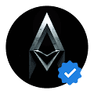 Astrominers OfficiaI 在过去的 7 天里没有出售 Astrominers 官方产品。 8888 位独特的 Astrominers 前往 Metaverse 的遥远星球，在那里他们开采稀有矿物以获得丰厚的回报 Astrominers 官方 NFT - 常见问题（FAQ） ▶ 什么是 Astrominers
Astromust Recruit Collection 独家 24 小时访问’play to mint' - 注册 wl spot.Astromust - 第一个结合了 play 和 mint 的视频游戏👀 在应用商店📢Astromust 是一个独特的、开放的世界、区